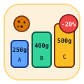

Come «disegniamo» i numeri per capirli al volo? Prima li mettiamo in fila sulla retta dei numeri
(dai naturali fino ai numeri reali che tappano ogni buco), e poi scopriamo l'arte di essere pigri intelligenti:
scegliere per ogni numero il «vestito» più comodo tra frazione, decimale, percentuale e fattori primi!
📏 Prima idea geniale: disporre i numeri su una retta
Un modo semplicissimo e potentissimo per rappresentare i numeri è disporli in ordine su una retta:
più ti sposti verso destra, più il numero diventa grande; più vai verso sinistra, più diventa piccolo.
Usa i pulsanti qui sotto per popolare la retta un insieme alla volta — e quando arrivi ai
numeri razionali, usa lo zoom per scoprire una sorpresa nascosta!
Insieme
Esempi
Che cosa succede sulla retta dei numeri?
Naturali (ℕ)
0, 1, 2, 3, 4…
Punti separati da 0 verso destra.
Interi relativi (ℤ)
… −3, −2, −1, 0, +1, +2…
Aggiungono i numeri negativi a sinistra dello zero; restano spazi vuoti tra un intero e l'altro.
Razionali (ℚ)
1/2, −3/4, 1,414…
Sono fittissimi (tra due frazioni ce n'è sempre un'altra!), ma restano comunque dei «buchi» (es. √2 e π).
Reali (ℝ)
Tutti i razionali + √2, π…
Tappano ogni buco: la retta diventa una linea continua completa!
🦴 Uno stesso numero, tanti vestiti: scegli la rappresentazione più comoda!
Sulla retta dei numeri hai appena visto una cosa fondamentale: 1/4, 0,25 e 25%
occupano esattamente lo stesso punto! Un numero, infatti, è come il protagonista di un videogioco RPG:
resta sempre lo stesso personaggio, ma può indossare vestiti diversi a seconda della sfida che ha davanti:
Frazione (es. 34, 13):
imbattibile per moltiplicazioni, divisioni, proporzioni e calcoli esatti — mai troncata e mai approssimata!
Numero decimale (es. 0,75): comodissimo per somme, confronti rapidi e scontrini in euro.
Attenzione: se la frazione ridotta ha al denominatore solo fattori 2 e 5, il decimale è finito;
altrimenti è periodico (infinite cifre, come 1/3 = 0,333…)!
Percentuale (es. 75%): è solo una frazione con denominatore 100
(75% = 75/100 = 3/4). Perfetta per sconti, sondaggi e statistiche.
Fattori primi (es. 72 = 2³ × 3²): i «mattoncini LEGO» indivisibili di ogni numero naturale.
Servono per semplificare frazioni al volo e trovare subito MCD (fattori comuni con esponente minimo)
e mcm (tutti i fattori con esponente massimo).
🧘 Nessun panico se sei un po' arrugginito! Se guardando gli esempi non ti ricordi benissimo
come si semplifica una frazione, non preoccuparti minimamente: ci torneremo con calma in una lezione dedicata.
In matematica, oltre a essere pigri, bisogna essere anche pazienti!
⚡ Kit di sopravvivenza da riconoscere a colpo d'occhio:
Frazione
Decimale
Percentuale
Trucco mentale lampo
1/2
0,5
50%
Dividi per 2
1/4
0,25
25%
Dividi per 4 (metà della metà!)
3/4
0,75
75%
Prendi i 3/4 (oppure togli 1/4 dall'intero)
1/5
0,2
20%
Dividi per 5 (oppure 10% × 2)
1/10
0,1
10%
Sposta la virgola di 1 posto a sinistra
1/8
0,125
12,5%
Metà di 1/4 (dividi tre volte per 2)
1/3
0,3
33,3%
Dividi per 3 (tieni la frazione per conti esatti!)
🎛 Esplora dal vivo: il Camerino dei Numeri
Muovi gli slider di Numeratore e Denominatore (o clicca i classici) per vedere lo stesso
numero indossare contemporaneamente tutti i suoi 4 «vestiti» — e scopri quando il decimale finisce e quando diventa periodico!
Versione cartacea: usa la tabella «Kit di sopravvivenza» qui sopra per confrontare frazione, decimale e percentuale. Ricorda la regola d'oro: dopo aver ridotto la frazione ai minimi termini, il decimale è finito se e solo se il denominatore ha come fattori primi soltanto 2 e/o 5.
⚔ Problemi ed Esercizi
Completa tutti i ★☆☆ per il Bronzo, i ★★☆ per l'Argento,
i ★★★ per l'Oro — e aggiungi il Mini-Compito di Realtà e le Flashcard per il
Trofeo di Completamento! (Ricorda: se clicchi «Mi arrendo!», l'esercizio mostra la soluzione ma assegna 0 EXP finché non ricarichi la pagina e lo risolvi da solo.)
Esercizio 1 — Il vestito giusto nella bottega di Hyrule
Nella bottega di Beedle (The Legend of Zelda) vuoi calcolare a mente il 25% di
84 rupie senza usare la calcolatrice. Quale rappresentazione di 25% rende il calcolo
immediato in un solo passaggio?
Esercizio 2 — Sconto lampo a mente (il trucco del 15%)
Uno zaino da escursione costa 60 € ed è in offerta con uno sconto del 15%.
Senza toccare la calcolatrice, calcola quanti euro risparmi.
Esercizio 3 — La trappola del decimale tagliato
Valuta questa affermazione: «La frazione 1/3 è esattamente uguale al numero decimale 0,33.»
Esercizio 4 — Le razioni di Pan di Via (Lembas) verso Mordor
Prima di partire da Gran Burrone (Il Signore degli Anelli), Sam deve preparare dei sacchetti
tutti identici con le provviste, senza lasciare nessun avanzo. Ha a disposizione
36 pezzi di Lembas e 48 mele essiccate.
Qual è il numero massimo di sacchetti identici che Sam può preparare?
Exercise 5 (CLIL) — The Black Friday Double Discount Trap!
A gaming headset originally costs €100. During Black Friday, an online store offers a
20% discount, and then applies an extra 20% discount on the already reduced price.
What is the final price you actually pay?
Mini-glossary:discount = sconto · reduced price = prezzo già scontato · final price = prezzo finale.
Sul tuo quaderno (o tablet) disegna una retta numerica da 0 a 2 e posiziona
con precisione questi cinque numeri vestiti in modi diversi:
0,25 · 2/5 · 75% · 1,2 · 7/4
Sfida nell'esercizio: prima di disegnare, scegli un'unità di misura comoda in quadretti per
l'intervallo da 0 a 1 (in modo da non dover stimare «a occhio» né i quarti né i quinti!).
Quando hai finito, controlla la soluzione nei suggerimenti e conferma qui sotto.
Esercizio 7 — Boss Fight: I tre fari della Rotta Maggiore
Per guidare la Thousand Sunny (One Piece) fuori dalla nebbia notturna, tre fari costieri
lampeggiano a intervalli regolari:
il Faro A lampeggia ogni 18 secondi;
il Faro B lampeggia ogni 24 secondi;
il Faro C lampeggia ogni 30 secondi.
Alle 21:00:00 lampeggiano tutti e tre esattamente nello stesso istante.
Dopo quanti minuti lampeggeranno di nuovo tutti e tre insieme?
(Occhio all'unità di misura richiesta!)
Esercizio 8 — Boss Fight: Il segreto dei decimali che non finiscono mai
Senza fare divisioni in colonna con la calcolatrice, quale delle seguenti frazioni produce un
numero decimale finito (non periodico)? Attento al tranello nascosto!
🌍 Mini-Compito di Realtà (al supermercato senza farsi fregare!)
Quale confezione di biscotti conviene davvero al chilogrammo?

Al supermercato trovi tre confezioni diverse dei tuoi biscotti preferiti, ma l'etichetta col prezzo al chilo è staccata:
Confezione A:250 g a 2,00 €;
Confezione B:400 g a 3,00 €;
Confezione C:500 g a 4,50 €, ma oggi ha lo sconto del 20% alla cassa!
Usa la rappresentazione più comoda (frazioni di chilogrammo!) per confrontarle tutte a parità di peso.
Quanto costa al chilogrammo (in €/kg) la confezione più conveniente?